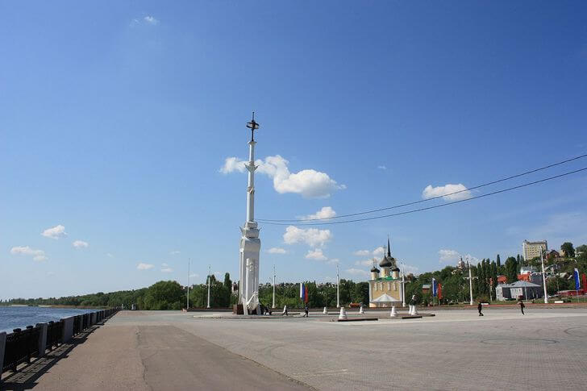

Площадь находится в центре Воронежа в пределах Петровской набережной. Ее построили в 1996 году в честь празднования 300-летия российского флота. Архитектурной доминантой места является высокая ростральная колонна. В ансамбль также входит Успенский Адмиралтейский храм XVII столетия. Адмиралтейская площадь часто становится местом проведения концертов и массовых гуляний.
